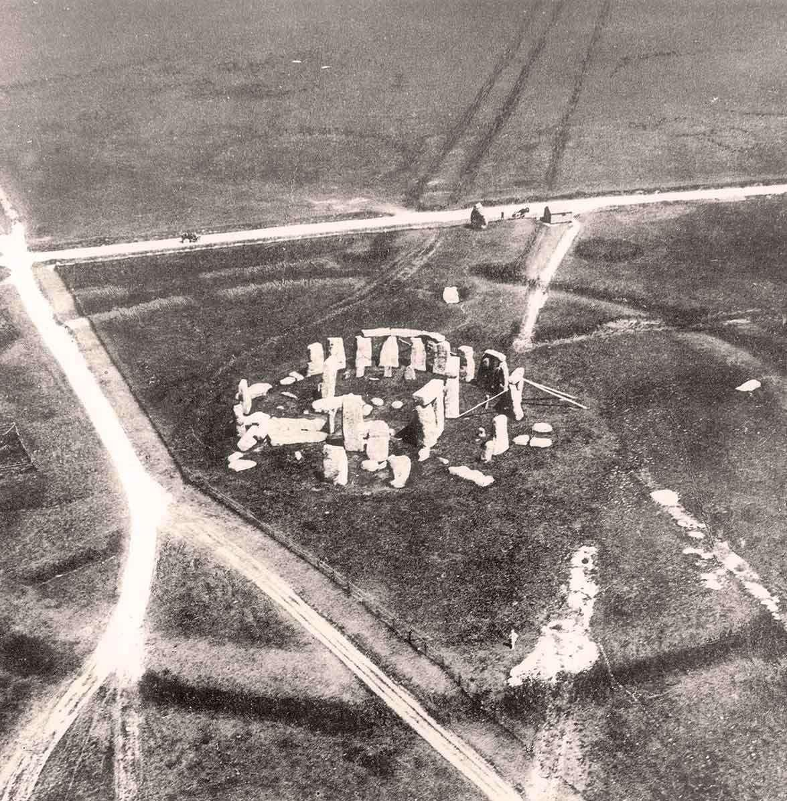
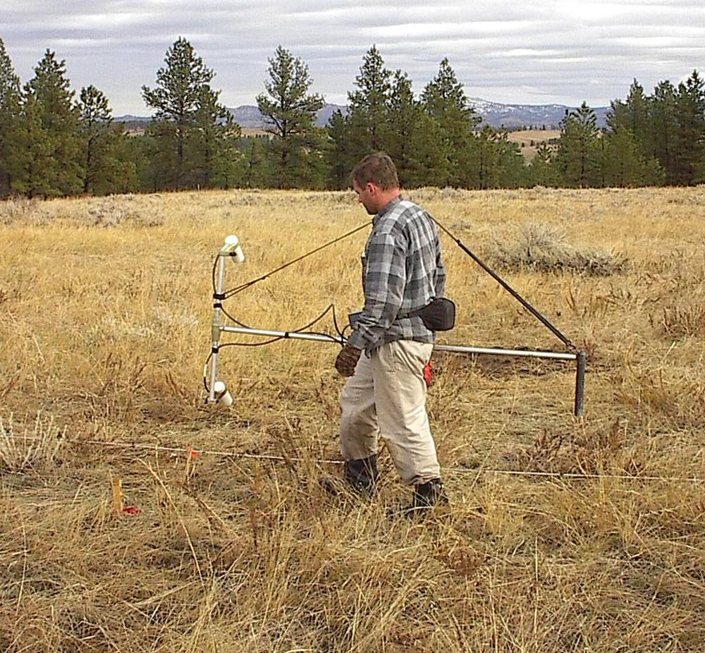
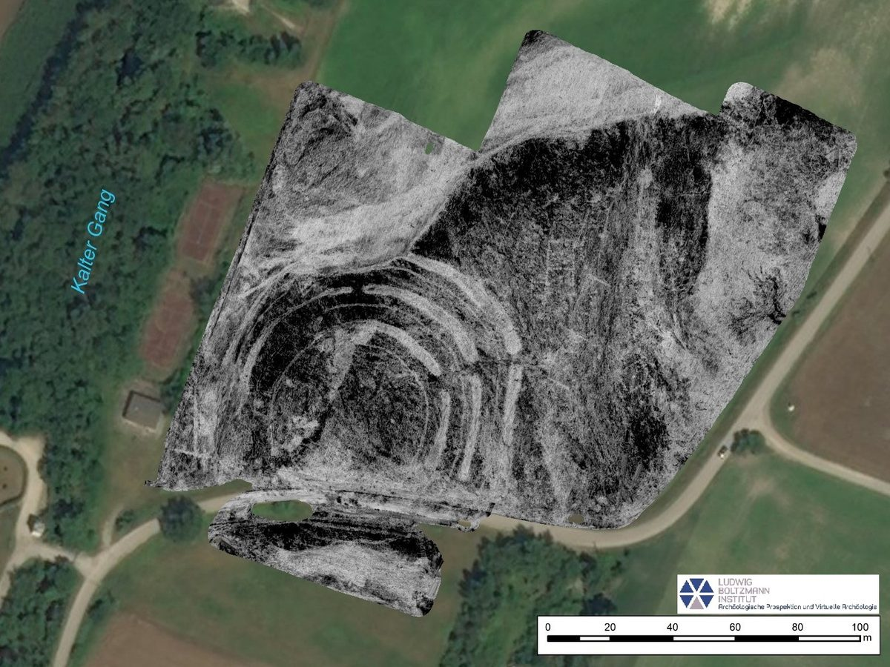
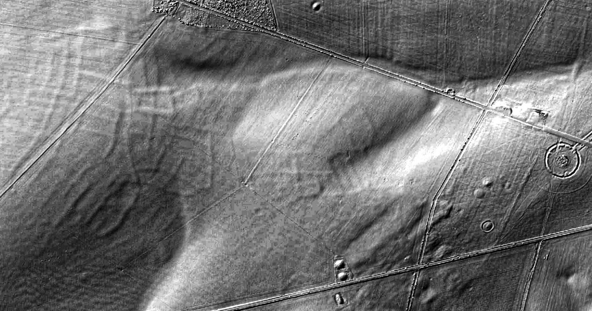
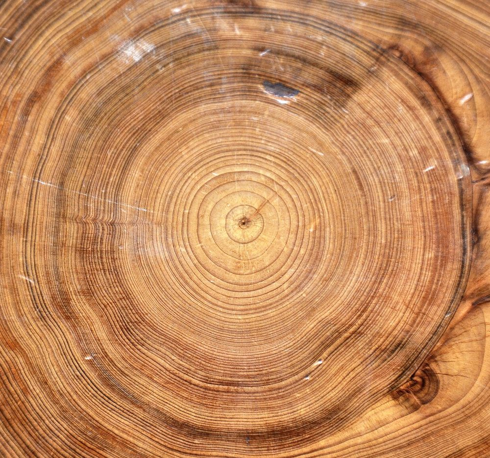
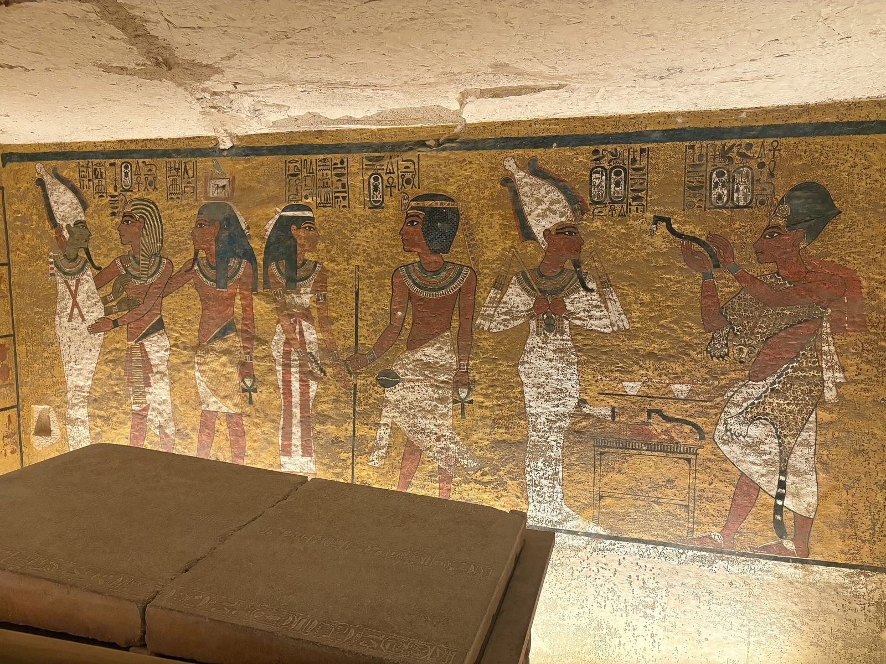

Unit 1 · The investigation of ancient sites and sources · Lesson 3
Digging the past II: surveying, dating and scientific analysis
How do archaeologists find what is buried without digging, work out how old it is, and test what the science tells them?
Year 11 Ancient History · Present with → or space · Read on a phone with R

Review · books closed · 6 minutes · press K for the timer
Five questions from Lessons 1 and 2
- What is the difference between a source and evidence? A source is anything from or about the past; it becomes evidence when it is used to answer a particular historical question.
- The Rosetta Stone: what type of source is it, and what is one limitation? An inscription (on an artefact, a stone slab). It records an official decree, so it shows what the authorities wanted people to read, not what ordinary people thought.
- In undisturbed layers, which is older: the lowest layer or the top one? Name the rule. The lowest. The law of superposition: in undisturbed layers, the lower layers are older than the layers above them.
- What did Schliemann’s great trench at Hisarlik destroy, and why does that matter? It cut through the mound and destroyed later layers that he thought did not matter. Excavation destroys what it uncovers, so whatever is not recorded is lost for ever.
- A coin minted in 120 CE is found in undisturbed Layer 2. What does it tell us about when Layer 2 formed? In or after 120 CE: the coin is a terminus post quem, the earliest possible date. It does not mean the layer formed in 120 CE.
Mark your own answers in a different colour. Which question did you find hardest?
Learning intentions and success criteria · 2 minutes
Today’s goals
- understand how archaeologists survey sites and date finds
- judge which scientific method suits which historical question
- describe three survey or dating methods and what each can detect or date
- explain one limitation of a scientific method
- choose a method for an inquiry question and justify my choice
Syllabus outcomes: AH-11-05 analyses different types of sources for evidence to support a historical account or argument · AH-11-06 explains differing interpretations and representations of the past · AH-11-07 communicates historical understanding, applying historical knowledge, terms and concepts. Life Skills: AH-LS-08 uses sources to form conclusions about the past · AH-LS-11 communicates information about the past using historical terms and concepts.
Note-making · the routine for the whole course
How to structure your notes
questions and key terms, written after
short phrases, arrows (→ leads to), abbreviations (c. = about; C-14 = carbon-14)
- 1Rule up the page firstA cue column about a quarter of the page wide; title and date at the top; room for a summary at the bottom.
- 2Listen and look, then writeDon’t copy while a slide is being explained. Phrases, not sentences.
- 3Write your own notes at each ✎ checkpointThen compare with the model notes, one row at a time. Add what you missed in a second colour.
- 4Write the cue questions afterwardsUse exam verbs: explain, analyse, assess. To revise, cover your notes and answer the cues.
- 5Finish with a three-sentence summaryTwo checkpoints today: survey, dating and cross-checking · science on people and when methods mislead.
Key vocabulary · add to the unit word wall
Words for finding and dating the past
| Finding without digging | Meaning |
|---|---|
| ground-penetrating radar (GPR) | A survey method that sends radar pulses into the ground to detect buried features without digging. |
| magnetometry | A survey method that measures tiny changes in the earth’s magnetic field to map buried ditches, pits and burnt areas without digging. |
| LiDAR | Laser scanning, usually from the air, that maps the ground surface in fine detail — even under trees. |
| Dating: two kinds | Meaning |
| relative dating | Putting layers or finds in order, older or younger, without a date in years. |
| absolute dating | Giving a date in years, usually as a range, using a scientific method. |
| Dating methods | Meaning |
|---|---|
| stratigraphy | The study of the layers (strata) built up on a site over time. |
| typology | Dating or grouping objects by comparing their style and form with similar objects. |
| radiocarbon dating | Dating once-living (organic) material, such as wood, bone or charcoal, by measuring how much carbon-14 has decayed. |
| dendrochronology | Dating wood by matching its pattern of tree rings to a known sequence. |
| thermoluminescence | Dating fired material, such as pottery, by measuring energy stored since it was last heated. |
1 · Finding without digging · I do — fill in the survey rows of your methods matrix
Finding what is buried, without digging



Magnetometry over more than 12 km² around Stonehenge, and radar over smaller areas, found 17 previously unknown ritual monuments (announced in 2014). An earlier LiDAR survey of the Stonehenge landscape had also found new sites.
At nearby Durrington Walls, radar signals were read in 2015 as a row of up to 90 buried standing stones. When archaeologists dug two of them in 2016, the holes had held huge timber posts, not stones.
Images: Tapatio (CC BY-SA 3.0) · LBI ArchPro (CC BY-SA 4.0) · John Wells (CC BY 4.0). Full details on the last slide.
2 · Dating · I do — fill in the dating rows of your methods matrix
Putting things in order, or giving a date in years?
Older or younger than something else: an order, not years.
A date in years, usually given as a range.
| Method | Kind | What it dates | Material needed | One limitation |
|---|---|---|---|---|
| stratigraphy | relative | the order in which layers, and the finds in them, were laid down | undisturbed layers | an order, not years; pits, burrows and later digging can mix layers |
| typology | relative | objects, by placing their style and form in a sequence | objects whose styles changed in a known order | only as good as the sequence it is compared with; gives years only if that sequence has been dated |
| radiocarbon | absolute | when a plant or animal was alive | once-living (organic) material: wood, charcoal, bone, seeds | organic material only; back to about 50,000 years; a range that must be calibrated |
| dendrochronology | absolute | the year each ring grew, so the year a tree was felled if its last ring survives | wood with enough rings: at least about 50 | needs a dated ring sequence for that region and kind of tree; a beam may be reused from an older building |
| thermoluminescence | absolute | when fired material was last heated | pottery, burnt flint or stone, plus the soil around it | error usually 5–10% of the age; any later heating resets its clock |
Which of these could date a stone axe?
Not radiocarbon or tree rings: stone was never alive. Typology can place it by its shape, and stratigraphy by its layer; charcoal from the same layer can be radiocarbon dated, which dates the layer. (If the stone was burnt, luminescence could date that heating.)
2 · Dating · I do — think aloud
Radiocarbon dating: how much carbon-14 is left?
… the radiocarbon date tells us when the organism was alive (not when the material was used).
Oxford Radiocarbon Accelerator Unit (ORAU), University of Oxford, ‘Radiocarbon Dating’ web page
- 1Organic material onlyWood, charcoal, bone, seeds. Stone, metal and pottery cannot usually be dated directly.
- 2It dates life, not useCharcoal from an old tree, or a beam taken from an older building, gives a date earlier than the fire or the house.
- 3A range, not a yearFor example, 95% likely to fall between 1375 and 1129 BCE (an example from the Oxford laboratory).
- 4It must be calibrated

The amount of carbon-14 in the air has changed over time, so results are checked against tree rings of known age.
Images: James St. John (CC BY 2.0). Full details on the last slide.
3 · Science and cross-checking · I do — fill in the CT scan and DNA rows of your methods matrix
Science on people: Tutankhamun’s CT scan and DNA
- A CT scanner takes X-ray ‘slices’ through a body without cutting it: about 1,900 images of the king, whose mummy had already been unwrapped and damaged by Howard Carter’s team in the 1920s.
- No evidence of a blow to the back of the head, or of other foul play: a popular murder theory lost its main support.
- A broken left thigh bone: part of the team thought he may have broken his leg shortly before he died; the team did not agree.
- Samples from 16 royal mummies, with the work repeated in a second, separate laboratory.
- A five-generation family tree: two mummies known by their tomb labels, KV55 and KV35YL, were identified as his parents (the team argued KV55 was the pharaoh Akhenaten; not everyone agrees).
- Signs of malaria in four of the mummies, including his.
These results suggest avascular bone necrosis in conjunction with the malarial infection as the most likely cause of death in Tutankhamun.
Z. Hawass and 16 co-authors, ‘Ancestry and pathology in King Tutankhamun’s family’, JAMA (Journal of the American Medical Association) 303 (2010), abstract · avascular bone necrosis: bone tissue dying because its blood supply fails
Look at the words “suggest” and “most likely”. How sure were the scientists?
Fairly sure, but not certain: it is a careful conclusion, not a proven fact. Other scientists wrote to the journal to challenge parts of the study.
3 · Science and cross-checking · I do — think aloud
Cross-checking a date and a DNA claim: Lake Mungo
Lake Mungo is on the Country of the Paakantyi (Barkindji), Ngiyampaa and Mutthi Mutthi peoples. Mungo Lady and Mungo Man, buried on the lake’s shore, are their Ancestors, and both have been returned to Country (in 1992 and 2017). Out of respect, this site shows no photographs of the Ancestral Remains or the burial places. Learn more from the Lake Mungo virtual excursion, made with representatives of these three peoples, and from Mungo National Park’s joint management program.
How old are the burials? The early estimates were far apart.
- earlierRadiocarbon dates placed Mungo Lady’s cremation at about 20,000–26,000 years ago.
- 1999Three methods, two on Mungo Man’s remains and one on the sand around them, agreed on about 62,000 years.
- 200325 luminescence dates on the layers of the lakeside dune placed both burials at about 40,000 years ago (± 2,000), correcting the earlier estimates.
In 2001 a team reported ancient DNA from Mungo Man that seemed to challenge the ‘Out of Africa’ model of human origins. In 2016 another team tested the same remains with newer methods and reported:
… the Mungo Man (WLH3) sample contained no Aboriginal Australian DNA.
They found only modern European DNA: contamination. None of his own DNA was found in the sample, so the 2001 result could not be repeated.
Every method has weak points: uranium can seep in and out of bone, and modern DNA can contaminate a sample. A result is trusted when independent checks agree with each other and with the order of the layers.
Notes checkpoint 1 of 2
Survey, dating and cross-checking
4 · When methods mislead · We do — read the summary together
Is there a hidden chamber in Tutankhamun’s tomb?

Does ‘not supported by the GPR data’ mean the radar proved there is nothing there?
Not quite. The radar found no evidence of doors or empty spaces up to about 4 metres beyond the walls: strong evidence against the claim, but not proof that nothing exists anywhere.
- 2015Egyptologist Nicholas Reeves argues that straight lines and cracks in the painted walls of the burial chamber mark hidden doorways, perhaps to the lost tomb of Queen Nefertiti.
- 2015A radar scan by Hirokatsu Watanabe is announced as evidence for hidden doorways in the north and west walls.
- 2016A second radar scan, by National Geographic engineers, does not find the same results.
- 2018Three independent teams scan with radar, each at a different frequency. Their report ends:
We conclude, with a very high level of confidence, that the hypothesis concerning the existence of hidden chambers adjacent [to] Tutankhamun’s tomb is not supported by the GPR data.
- 2020A team led by Mamdouh Eldamaty describes, in an unpublished report, a possible corridor-like space a few metres east of the burial chamber, found by radar from outside the tomb. In 2020 it had not been tested by digging.
Summary written for this lesson from National Geographic (6 May 2018, quoting the 2018 report) and Nature (27 February 2020)
4 · When methods mislead · We do — build the chain together · cold call
Claim → evidence → later test
What was claimed, and by whom?
Hidden doorways in the burial-chamber walls lead to more rooms, perhaps Nefertiti’s tomb (Reeves, 2015).
What was the claim based on?
Lines and cracks in the wall paintings, then the echoes in the first radar scan (2015).
What happened when it was tested again?
The 2016 scan did not find the same results. Three teams in 2018 found no evidence of doors or empty spaces up to 4 metres beyond the burial chamber.
So what can we conclude?
Most of the evidence does not support a hidden chamber behind the walls, but the debate is not closed: a 2020 survey outside the tomb reported a possible space that had not been tested by digging.
How can a new method mislead as well as reveal?
Radar records echoes; people decide what they mean. The 2018 team suspected ‘ghost signals’: radar waves travelling along the painted plaster walls, and reflections from the stone sarcophagus. So results must be repeated by other teams, and tested by digging where possible.
Notes checkpoint 2 of 2
Science on people, and when methods mislead
5 · Which method? · You do · 12 minutes · press K for the timer
Which method? Six practice cases
1Choose a method2Justify it: why this method for this material?3Name one limitation
magnetometry · radar · LiDAR · stratigraphy · typology · radiocarbon · dendrochronology · thermoluminescence · CT scan · DNA
A radiocarbon or typology · B dendrochronology or stratigraphy · C thermoluminescence or radiocarbon · D radar or radiocarbon · E DNA or typology · F the coins’ own dates or radiocarbon
Find out why radiocarbon dates must be calibrated and given as ranges. What does that mean for how sure we can be about a date?
These are made-up cases for practice.
5 · Which method? · You do · 5 minutes
Your own inquiry question, and one sentence
Write one open question (how? why? in what ways? to what extent?) about a site or a find, and name the method that would help answer it.
How was the landscape around Stonehenge used while the monument was being built? → magnetometry and radar to map buried monuments, then excavation and radiocarbon to date them · How were the royal mummies of Tutankhamun’s time related to each other? → DNA analysis
“X is the most suitable method because …; however, it cannot …”
Radiocarbon dating is the most suitable method for the charcoal from the hearth because charcoal was once part of a living tree; however, it cannot tell us exactly when the fire was lit, because it dates when the wood grew and gives a range of years.
5 · Which method? · check your cases · cold call before each row
Check your cases: best method, why, and one limitation
| Case | Best method | Why | One limitation |
|---|---|---|---|
| A · charcoal hearth | radiocarbon | charcoal was once part of a living tree | dates when the wood grew, not the fire; a range of years |
| B · roof beam | dendrochronology (radiocarbon also works) | its rings can be matched to a dated ring sequence | needs enough rings, and the last ring for the felling year; the beam may be reused |
| C · pottery kiln | thermoluminescence | it dates when fired clay was last heated | error usually 5–10% of the age; it dates the last firing, not the first |
| D · unexcavated field | magnetometry, then radar (LiDAR for banks or mounds) | finds buried features without digging | shows patterns, not what they are or when; must be tested by digging |
| E · family links | DNA analysis | DNA can show biological family links directly | ancient DNA breaks down and is easily contaminated; testing real people needs permission |
| F · coin hoard | the coins’ own dates and designs (typology) | the newest coin gives the earliest date the hoard could have been buried | only a ‘date after which’; radiocarbon cannot date metal |
Check · gesture vote · thumbs up = true · down = false · sideways = not sure
True or false? Vote, then justify
“Radiocarbon can date a bronze sword.”
Bronze was never alive. As Oxford’s radiocarbon laboratory puts it, “… stone, metal and pottery cannot usually be directly dated by this means unless there is some organic material embedded or left as a residue.” A wooden handle, or charcoal in the same layer, could be dated instead.
“Radar proves what lies underground.”
Radar records echoes, and people interpret them. At Durrington Walls the radar ‘stones’ turned out to be post holes when two were dug; in Tutankhamun’s tomb the 2015 ‘doorways’ were not found again. Radar shows where to look; repeat scans and digging test it.
Finish your notes If time · or at home
Summary: three sentences
- How can archaeologists find buried sites without digging?
- How do relative and absolute dating differ, and what limits them?
- Why must scientific results be tested and cross-checked?
Archaeologists can find buried features without digging by using magnetometry, ground-penetrating radar and LiDAR, but these show only patterns that must be interpreted and then tested. Relative dating such as stratigraphy puts layers and finds in order, while absolute methods such as radiocarbon, dendrochronology and thermoluminescence give dates in years, each only for the right material and usually as a range. Because every method has limits, results must be cross-checked: at Lake Mungo independent dates agreed on about 40,000 years and a DNA claim could not be repeated, and in Tutankhamun’s tomb later scans did not support a hidden chamber.
Exit ticket · 4 minutes · before you leave
One sentence
“The best method for dating a wooden beam is … because …”
a method that suits wood (dendrochronology is best; radiocarbon also works but gives a wider range) · a reason tied to the material: its tree rings can be matched to a dated ring sequence · and, for a stronger answer, a limitation: too few rings, a missing last ring, or a reused beam.
Then check yourself against today’s three “I can” statements. Next lesson: what ancient texts and inscriptions can and cannot tell us.
Practice and review · 1 of 3 · true, false, justify
True or false? Justify your answer
- 1Radiocarbon dating can date a pottery bowl directly. False — pottery was never alive. Date organic residue in it, or use thermoluminescence to date its firing.
- 2Dendrochronology can give the exact year a tree was felled. True — if the last ring (at the bark edge) survives and the ring pattern matches a dated sequence for that region.
- 3Stratigraphy tells us the age of a layer in years. False — it gives the order of the layers (relative dating), not years.
- 4A radar survey proves what lies underground. False — it records echoes that people interpret; digging at Durrington Walls showed radar ‘stones’ were post holes.
- 5If three dating methods agree, the date must be right. False — at Lake Mungo three methods agreed on about 62,000 years for Mungo Man (1999), but later dating of the layers corrected this to about 40,000.
- 6Thermoluminescence dates when pottery was last heated. True — heating resets its ‘clock’, so it dates the last firing (or any later fire).
Practice and review · 2 of 3 · writing
Write it as a historian
You wrote one in class. Now write one for case C, the pottery kiln: “X is the most suitable method because …; however, it cannot …”
Thermoluminescence is the most suitable method for the kiln because it dates when fired clay was last heated; however, it cannot give an exact year, because its results usually carry an error of 5 to 10 per cent of the age.
Explain how the Tutankhamun tomb scans show that interpretations of the past can change with new evidence.
In 2015 a radar scan seemed to support the claim that hidden doorways lay behind the painted walls of Tutankhamun’s burial chamber. When the scan was repeated in 2016, and again by three teams in 2018, the results were not found, so the claim lost its main support. A 2020 survey outside the tomb has reopened the question, which shows that interpretations stay open to new evidence.
Why must radiocarbon dates be calibrated and given as ranges? Explain what that means for how confident we can be about a date.
The amount of carbon-14 in the atmosphere has not always been the same, so a raw radiocarbon result is not a calendar date. Scientists calibrate it by comparing it with tree rings and other records of known age. Because both the sample and the tree rings are measured with some uncertainty, and the record goes up and down over time, the answer is a range of years, sometimes more than one. A result given as a 95% chance of falling between 1375 and 1129 BCE tells us the event almost certainly lies in that range, but not exactly when.
Practice and review · 3 of 3 · cover your notes and answer from memory
Quick checks
- Name three survey methods and what each detects. Magnetometry: magnetic changes from ditches, pits and burning · ground-penetrating radar: echoes from buried features, with their depth · LiDAR: the shape of the ground surface, even under trees.
- What is the difference between relative and absolute dating? Relative dating puts things in order (stratigraphy, typology); absolute dating gives a date in years, usually as a range (radiocarbon, dendrochronology, thermoluminescence).
- Give two limitations of radiocarbon dating. Any two: organic material only · it dates when the organism was alive, not when the material was used · it gives a range that must be calibrated · it reaches back only about 50,000 years.
- What did the 2005 CT scan and the 2010 DNA study add to what we know about Tutankhamun? No evidence of a blow to the head; a broken left thigh bone; his parents identified among the royal mummies; signs of malaria, suggested with bone disease as the most likely cause of death (still debated).
- Why were the Lake Mungo dates cross-checked, and what was the result? Early estimates were far apart: radiocarbon put Mungo Lady at about 20,000–26,000 years, and estimates for Mungo Man ranged from about 30,000 to about 62,000 years. Dating the grave fill, the sand the grave was dug into and the layers over it gave agreeing results: both burials about 40,000 years. The 2001 DNA claim could not be repeated in 2016.
- Can a radar scan prove what lies underground? Explain. No. It records echoes that people interpret; results must be repeated and tested by digging (Durrington Walls, Tutankhamun’s tomb).
Sources and credits
Where everything comes from
Oxford Radiocarbon Accelerator Unit, University of Oxford, ‘Radiocarbon Dating’ and ‘Radiocarbon Calibration’ (© University of Oxford; quoted briefly).
Kristin Romey, ‘It’s Official: Tut’s Tomb Has No Hidden Chambers After All’, National Geographic, 6 May 2018, quoting the 2018 radar report (© National Geographic; quoted briefly). Jo Marchant, ‘Is this Nefertiti’s tomb? Radar clues reignite debate over hidden chambers’, Nature 578 (2020): 497–498.
Z. Hawass et al., ‘Ancestry and pathology in King Tutankhamun’s family’, JAMA 303 (2010): 638–647, abstract (© American Medical Association; quoted briefly). CT scan: Associated Press, 8 March 2005; National Geographic, 1 December 2006.
Lake Mungo: J. M. Bowler et al., Nature 421 (2003): 837–840 (abstract); A. Thorne et al., Journal of Human Evolution 36 (1999): 591–612; G. J. Adcock et al., PNAS 98 (2001): 537–542; T. H. Heupink et al., PNAS 113 (2016): 6892–6897 (abstract; © the authors; quoted briefly); J. M. Olley et al., Quaternary Science Reviews 25 (2006): 2469–2474; T. Pietsch et al., Journal of Quaternary Science 34 (2019): 662–673.
Survey: University of Birmingham news (10 September 2014; 7 September 2015); Chris Gaffney, The Conversation (15 September 2014); Current Archaeology 320 (2016); M. Bewley et al., Antiquity 79 (2005). Dating: G. Duller, Luminescence Dating (English Heritage, 2008); Oxford Tree-Ring Laboratory (Baltimore, USA), ‘Sampling procedures’ (page now offline; archived copy, 13 September 2024).
Teacher resources (class notebook): Lake Mungo and Australia’s Ancient Past; Introduction to Archaeology. Lake Mungo information shared with Community: NSW Department of Education, Lake Mungo virtual excursion; NSW National Parks and Wildlife Service, Mungo National Park.
- Stonehenge from a tethered balloon, 1906 · Photo: P. H. Sharpe, Royal Engineers (1906) · Public domain · source
- Magnetometer survey, Montana, USA · Photo: Tapatio · CC BY-SA 3.0 · source
- Ground-penetrating radar map, Velm, Austria · LBI ArchPro · CC BY-SA 4.0 · source
- Lidar view of the prehistoric field system west of Stonehenge · Image: Dr John Wells, from Environment Agency lidar (lidarmap.uk; contains public sector information licensed under the Open Government Licence v3.0) · CC BY 4.0 · source
- Tree rings in a slice of bald cypress · Photo: James St. John · CC BY 2.0 · source
- North wall of Tutankhamun’s burial chamber (KV62) · Photo: ولاء (Wiki Loves Monuments 2025) · CC BY-SA 4.0 · source
_-_1906.jpg){kind=link}


_1_(24518408267).jpg){kind=link}

All images are public domain or openly licensed, and were resized for the web (the magnetometer and tree-ring photos were also cropped). Each is shared under the licence shown. No photographs of Aboriginal Ancestral Remains, burials or sites are used.
Diagram: the radiocarbon graph was drawn for this lesson, to scale, from the half-life given by the Oxford Radiocarbon Accelerator Unit (5,730 years).
Syllabus: Outcomes and content: NSW Education Standards Authority (NESA), Ancient History 11–12 Syllabus (2024). © NESA.